同一种当前食物，在不同近期历史之后会产生不同的多巴胺和进食持续。
在匹配当前奖赏的比较中，进食持续和持续性VTA多巴胺的历史效应在
9/9只小鼠中方向一致（双侧 exact Wilcoxon signed-rank，两个终点均 P=.003906）。
对应面板：Fig. 1E,F。
这个项目问的是一个很直接的问题：同一种食物，在动物刚刚经历过不同奖赏之后，VTA多巴胺反应还会不会一样？ 答案是不一样。即使当前吃到的是完全相同的20E或100E，前面吃过什么仍然会改变持续性的VTA多巴胺信号，也会改变动物继续吃下去的倾向。 我们用一个简单的“参照值”来描述这种历史影响：过去真正被动物采样过的奖赏会逐步形成一个内部参照 R， 当前奖赏 U 则相对于这个参照被评价，得到 C=U−R。 这个历史相对值不是在舔第一下之前就固定出现，而是在持续进食过程中逐渐变得更明显；与此同时，舔舐和当前采样本身也强烈贡献于VTA多巴胺。 因果实验进一步说明，当前进食时的VTA多巴胺确实控制进食是否继续；但过去的刺激历史可以影响之后的多巴胺，而不一定足以改变之后的进食时长。
在匹配当前奖赏的比较中，进食持续和持续性VTA多巴胺的历史效应在
9/9只小鼠中方向一致（双侧 exact Wilcoxon signed-rank，两个终点均 P=.003906）。
对应面板：Fig. 1E,F。
从进食早期到持续期，relative-value coordinate 的系数增加 +1.458，
涉及11只小鼠（animal-clustered regression interaction，P=9.02×10−8）；
11/11只动物的单动物斜率均增加。
对应面板：Fig. 5A,B。
进食期激活VTA多巴胺使终止进食的odds ratio降至 .690
（13只小鼠；animal-clustered discrete-time logistic hazard，P=3.29×10−10）；
相反，进食时段特异的Jaws抑制使终止odds升高（OR=1.341；6只小鼠；P=.0289）。
对应面板：Fig. 7A–C。
下面先把页面中最容易混淆的实验缩写和模型变量定义清楚。 最重要的一点是：R 是储存的参照值，而 C=U−R 才是当前奖赏相对这个参照的相对值。
| 术语 | 具体定义 | 这里如何使用 |
|---|---|---|
| 100E / 20E | E = Ensure。100E 是原浓度Ensure；20E 是稀释到原浓度20%的Ensure。 | 它们分别作为高奖赏和低奖赏液体食物。“100/20”指的是Ensure浓度，不是模型中的value数值。 |
| Reward block | 在variable session中，100E和20E每120 s切换一次。不同采集批次起始block的高低奖赏顺序并不完全相同，重建时已显式校正。 | 如果一个bout跨越120-s切换边界，则整个bout被剔除，而不是在边界处强行切成两个bout。 |
| Feeding bout | 在完整lick stream中，如果相邻两次lick间隔 >5 s，则定义为新的bout。bout结束时间为最后一次lick + ~0.12 s；≤0.2 s的bout剔除。 | 主要持续性神经读出是bout开始后2–5 s，所以该分析只使用持续至少5 s的bout。 |
| GRAB-DA | 使用GPCR-activation-based dopamine sensor进行fiber photometry，记录位置是VTA局部。 | 这里测的是VTA局部dopamine-sensor fluorescence，不是NAc等投射区多巴胺，也不是dopamine neuron calcium。 |
| VTA局部多巴胺信号 | GRAB-DA是在VTA本地测量的细胞外多巴胺，主要对应局部体树突(somatodendritic)释放，而不是某个投射终末区的多巴胺释放。 | 因此这里应解释为VTA局部dopamine dynamics；不能直接等同于NAc dopamine，也不能假定它代表所有VTA dopamine projection的输出。 |
| 主11鼠 alternating dataset | 每只动物一场重建后的100E/20E alternating session，共11场。strict table共有402个bouts，其中387个来自第一个block之后；共同时间分析进一步要求bout duration ≥5 s且pre、0–2 s、2–5 s DA窗口均有效，因此保留192个post-switch bouts。 | 192个eligible bouts按动物(193,195,199,200,202,217,219,236,239,240,243)分别为11,14,17,32,4,22,17,26,21,20,8；Fig. 5的共同时间比较使用的就是这批bouts。 |
| H / L / S / N | H = 稳定高奖赏context中的100E；L = 稳定低奖赏context中的20E；S = alternating session中的100E；N = alternating session中的20E。 | H vs S、L vs N 的当前食物完全相同，主要差别是近期奖赏历史不同。 |
| U | 当前奖赏项；主模型中20E=0，100E=1。 | 这里的U只是当前reward identity的模型编码，不是一个独立测得的subjective utility。 |
| R | 由此前真正被动物采样过的reward逐步形成的stored reward reference。 | 每一次此前reward sample都会按 R ← R + α(U − R) 更新参照。 |
| C = U − R | 当前奖赏相对于stored reference的relative value / contrast coordinate。 | 旧数据表中的列名 RWstate 实际对应的是C，不是R。 |
| α | 每个reward sample更新R时的学习率/更新比例。 | 自然alternating-reward task中的最优区间较宽，中心大约在0.15–0.16；跨任务分析固定使用α=.20，是因为它仍处于这个宽峰附近，不应理解为一个生物学常数。 |
| QE | Quinine-adulterated Ensure；这里用100E + 3 mM quinine作为更低质量的sensory outcome。 | 用于测试这种history computation能否迁移到另一种reward-quality操作。 |
| Stim13 | 13只小鼠的VTA dopamine stimulation cohort。 | 同一批动物既用于“当前刺激”的acute effect，也用于“过去刺激历史”的memory analysis。 |
| Jaws / JAWS | Jaws是用于抑制VTA dopamine neuron的red-shifted inhibitory opsin。 | 用于检验进食期VTA多巴胺是否对正常feeding persistence具有因果作用。 |
| FullHistory | 保留更多过去reward序列信息的高维history comparator。 | 用于检验单一C坐标是否遗漏了更复杂的历史结构。 |
| OOF | Out-of-fold prediction，这里多数情况下是leave-one-animal-out。 | 用于prediction check；和within-animal inferential test分开解释。 |
| cSNC / GT | cSNC = consummatory successive negative contrast；GT = gustatory thalamus。 | 经典contrast文献只作为候选比较环路的参考，不把它和本项目的VTA机制直接视为同一个现象。 |
R 是stored reference。控制当前reward U后，R越高，持续性VTA多巴胺越低，因此R可以有负系数。
约3 s后逐渐变正的，是C=U−R的系数。
旧文档中的 RWstate 也是C，而不是R：在192个eligible bouts、11只小鼠中，
βC=+2.283（animal-clustered ordinary least-squares regression，P=.00171）。
所以固定U时，“C正向”与“R负向”本质上是在描述同一种opponent geometry。
在把U和R分别z-score后的two-predictor model中，持续性多巴胺的系数为 U=+.762，R=−.721（192个eligible bouts，11只小鼠；animal-clustered OLS；P=.00216和.0282）。 后来的action-adjusted model加入早期及同步舔舐项后，使用raw-scale U/R，得到 U=+.815，R=−2.211（同一11只小鼠；P=8.6×10−5和.00153）。 这两个模型的scale不同，而且都没有强制 βU=−βR；只有直接使用C=U−R时才施加这种等幅反向关系。
在第一下lick之前，模型已经知道当前block是哪种reward，但动物尚未真正采样当前食物。 此时C与pre-bout VTA dopamine呈负关系（β=−.485；11只小鼠；animal-clustered regression，P=.000235）。 因此更合理的解释是：pre-bout信号反映历史/context形成的准备状态， 而不是negative prediction error，也不是说明当前食物本身具有负utility。
| 实验 | 动物数 | Animal IDs | 重要重叠关系 |
|---|---|---|---|
| Fig.1 H/L/S/N matched-current comparison | 9 | 002, 004, 193, 195, 199, 200, 202, 217, 219 | 其中7只也属于后面的11-mouse alternating-reward cohort；002还出现在QE/physiology cohort。 |
| Figs.2–5 120-s alternating 100E/20E | 11 | 193, 195, 199, 200, 202, 217, 219, 236, 239, 240, 243 | 前5只后来又进入单独的20E stimulation session。 |
| QE / quinine / hunger / LiCl family | 7 | 001, 002, 003, 006, 007, 018, 019 | 这些分析属于同一个7-mouse family；只有002和Fig.1 cohort重叠。 |
| Stim13 acute + stimulation-history | 13 | 017, 023, 029, 030, 034, 058, 066, 070, 071, 128, 130, 131, 133 | 与11-mouse natural alternating-reward cohort不重叠。 |
| 20E stimulation replication | 5 | 193, 195, 199, 200, 202 | 这5只就是natural alternating-reward cohort中的同一批动物，只是不同session。 |
| Jaws contingent / noncontingent inhibition | 6 | 098, 103, 109, 110, 111, 112 | 独立的inhibition cohort。 |
| Semaglutide / PBS | 7 | 005, 029, 034, 058, 066, 070, 071 | 其中6/7与Stim13重叠，但semaglutide是不同的药理实验。 |
H/L是稳定session；S/N是120 s高低奖赏交替session中的当前100E/20E。Fig. 2–5全部使用alternating session；Fig. 1则比较stable与alternating context，同时固定当前食物。
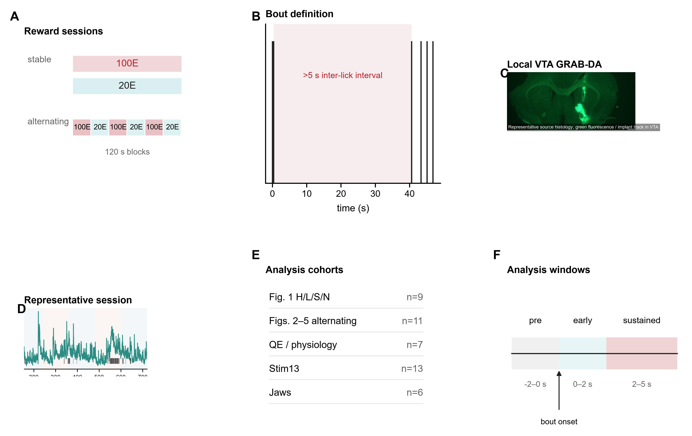
这一图故意不依赖任何latent-state model。H与S当前都是100E；L与N当前都是20E。 每一对中，当前食物完全相同，主要区别只是之前的reward history不同。
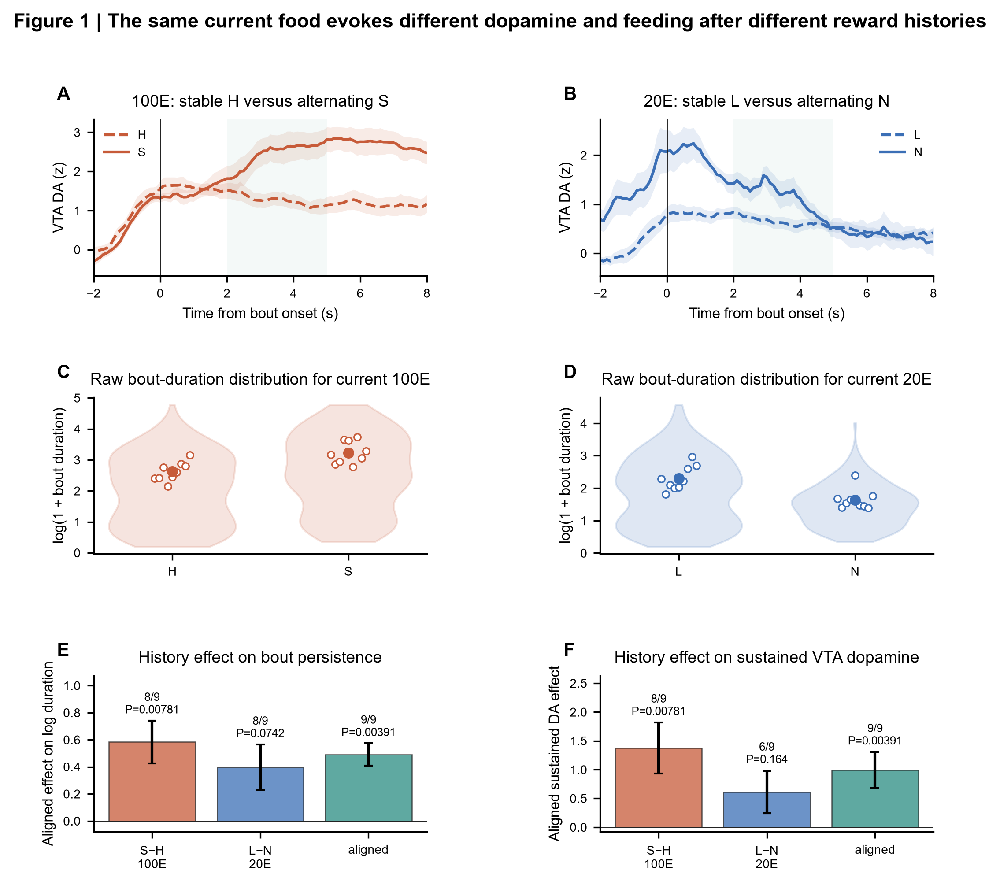
对当前100E来说，比较稳定100E背景和alternating背景； 对当前20E来说，也比较不同近期背景下的同一20E。 这种matched-current设计直接排除了“只是因为现在食物更好/更差”的简单解释。
history effect并不是简单地在bout开始前先改变一个baseline，然后整个bout原样延续。 pre-consumption和2–5 s sustained period呈现不同符号结构，因此后面需要做time-resolved decomposition。
120-s交替block提供了一个关键机会：在switch之后的第一bout，动物已经经历了“时间过去”，但还没有真正吃到当前block的新reward。 这样可以把passive time和actual sampling分开。
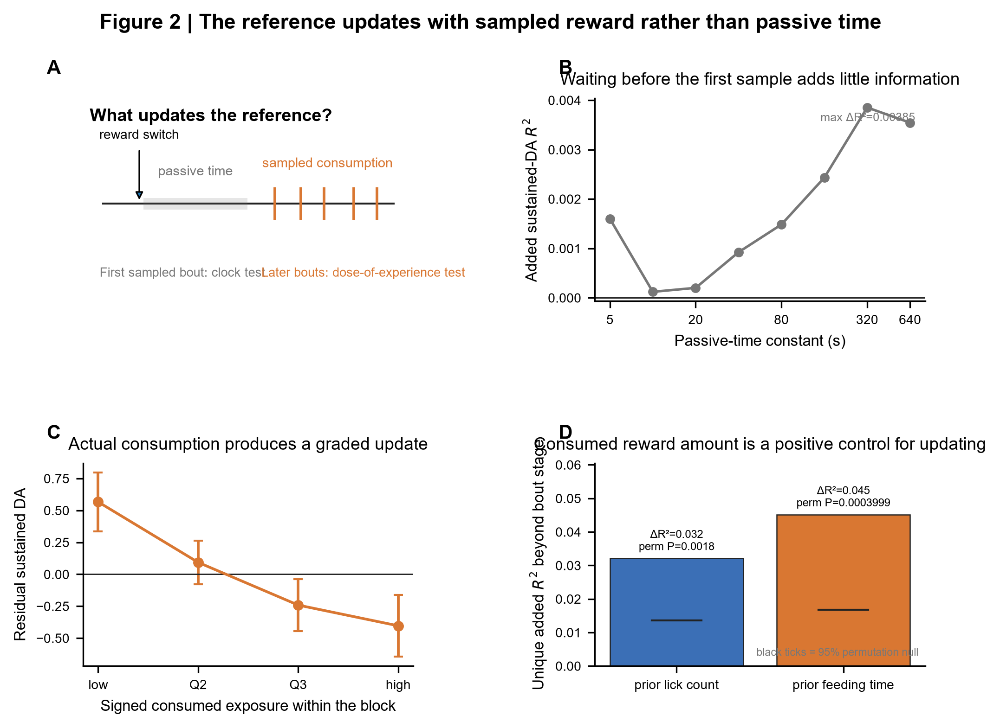
递归模型用过去被采样过的reward更新R，然后把当前reward写成C=U−R。 因为模型本身已经单独控制了current U，所以C额外解释的部分，本质上就是recent stored history带来的信息。
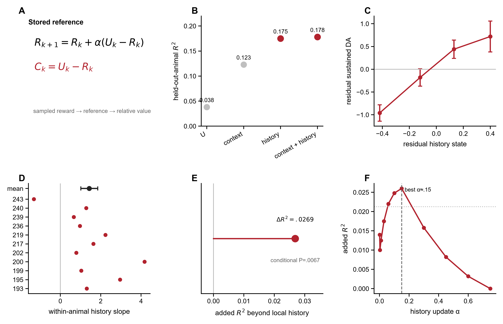
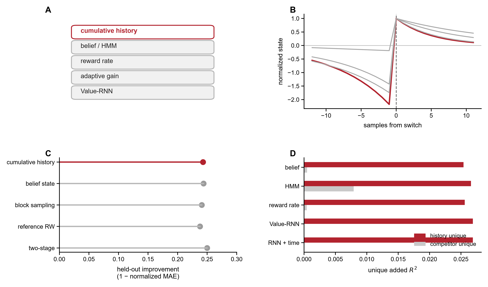
HMM/belief-state、average-reward、uncertainty/adaptive-gain和recurrent history model都能解释一部分动态。 这里更重要的不是挑出一个“冠军模型”，而是确定哪些history信息在这些替代解释之后仍然存在。
这一节把licking/action control直接放进主生物学逻辑里。 VTA sustained dopamine并不是“纯value”信号，但也不是“只是舔得更多”。
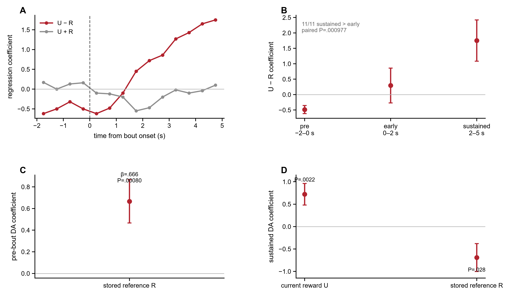

在sensitivity analysis中，同时灵活控制0–2 s和2–5 s licking之后， C仍贡献ΔR²=.04895， 来自11只小鼠（conditional permutation，P=.0449）。 因为这个P值接近阈值，所以它是支持性证据，不作为主结论的唯一依据。
在10个探索性0.5-s bin中，late C effect在11只小鼠的animal-clustered regressions中达到 Benjamini–Hochberg q≈.076。 这更适合作为exploratory timing evidence，而不是一个独立的corrected discovery。
在另一批7只小鼠中，用quinine-adulterated Ensure建立不同的reward-quality context， 然后把natural alternating-reward task中拟合出的history coordinate冻结后直接带过去测试。
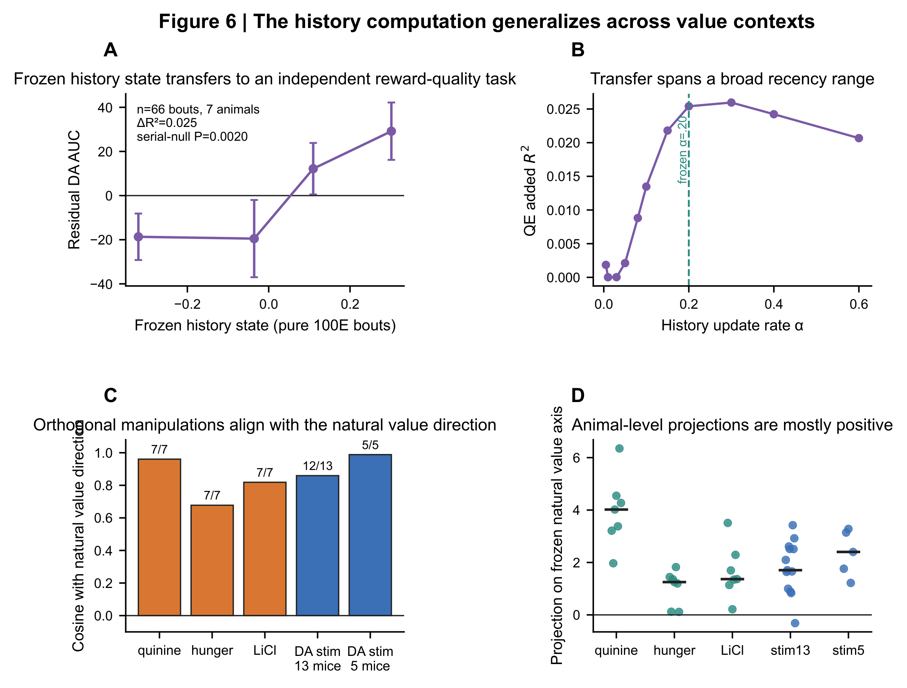
这里要把两个问题分开：一是“当前bout里提高/降低dopamine会发生什么”；二是“过去经历过dopamine stimulation之后，会不会留下history trace”。
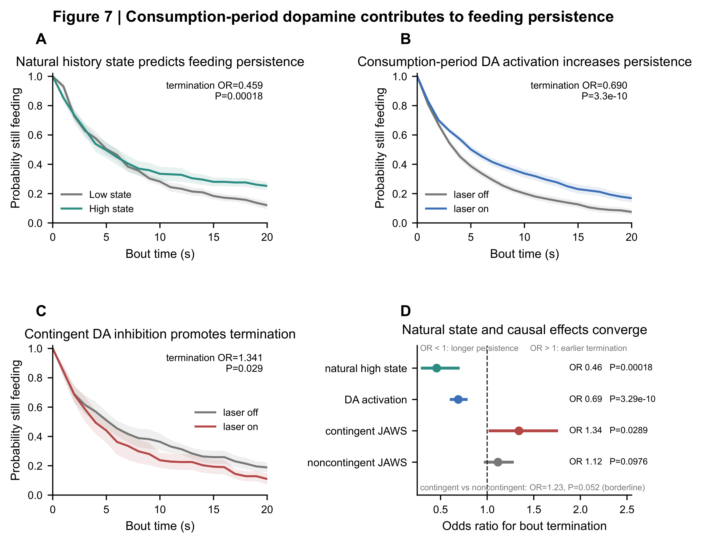
进食过程中激活VTA dopamine neuron，会降低停止进食的概率； contingent inhibition则使停止概率增加。 这直接说明consumption-period dopamine参与控制feeding persistence。
在Stim13中，控制当前stim condition、local adaptation和future-history之后， 过去ON/OFF sampling history仍解释之后的dopamine： ΔR²=.002524，13只小鼠 （conditional permutation，P=5×10−5）。 但同一cohort中，past-history对之后bout duration没有被检测到 （animal-clustered regression，P=.742）。
当前数据已经比较强地限定了reward-history computation，但还不能把R的储存、C的比较和behavioral readout精确落到具体细胞类型或单一脑区。
prior lick count和prior feeding time在现有任务里高度相关。 下一步需要独立操纵未采样延迟、采样次数和实际摄入量，才能区分lick-by-lick update和integrated exposure。
single-cell recording或imaging可以检验这些成分是否由不同dopamine subpopulation携带， 还是由同一细胞在不同时间阶段multiplex。
可以分别扰动candidate upstream circuit、VTA本身和downstream feeding gate， 看哪一步负责存R、哪一步产生C、哪一步把C转换成persistence。
固定reward identity，同时独立改变“没吃时等了多久”“吃了几次”“总共吃了多少”。 如果reference主要由实际experience更新，那么单纯等待应该很少移动R，而sampling exposure应该产生graded update。
hunger、satiety或GLP-1 manipulation可以和同一alternating schedule正交组合。 如果internal state主要改变当前reward value，应首先影响U；如果主要改变history learning，则应改变R的形成；如果主要改变behavioral expression，则可能改变dopamine-to-persistence coupling。
默认折叠，只在需要检查robustness、model comparison、physiology context或原始表格时展开。
| 问题 | 结果 | 含义 |
|---|---|---|
| late effect是不是baseline subtraction造成的？ | 不用pre-bout subtraction的raw signal仍保留positive sustained contrast。 | 时间上的sign reversal不是简单的减法artifact。 |
| 严格匹配早期舔舐后history effect还在吗？ | exact 0–2 s lick-count matching后，高低C bout仍保持方向性分离。 | 早期motor output不足以单独解释history effect。 |
| 换成非线性nuisance model会不会消失？ | Random Forest、ExtraTrees和histogram gradient boosting都保留positive residual C association。 | 结果不是某一种polynomial specification特有。 |
| 一个小RNN能否取代history coordinate？ | 个别nominal improvement无法通过family-wise correction和seed confirmation。 | recurrent flexibility本身还不能稳定替代简单history coordinate。 |
| 不同acquisition cohort方向一致吗？ | 总体方向广泛为正，但leave-one-cohort-out后样本量下降、统计力不足。 | 暂时不应宣称某个genotype/cohort特异机制。 |
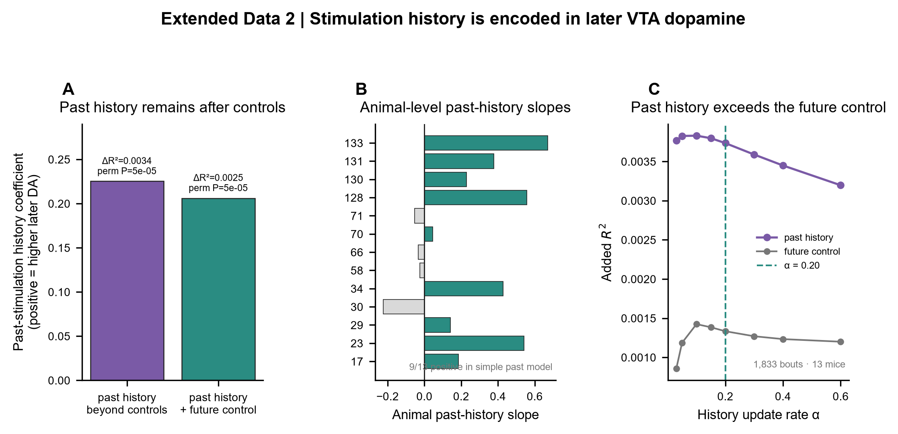
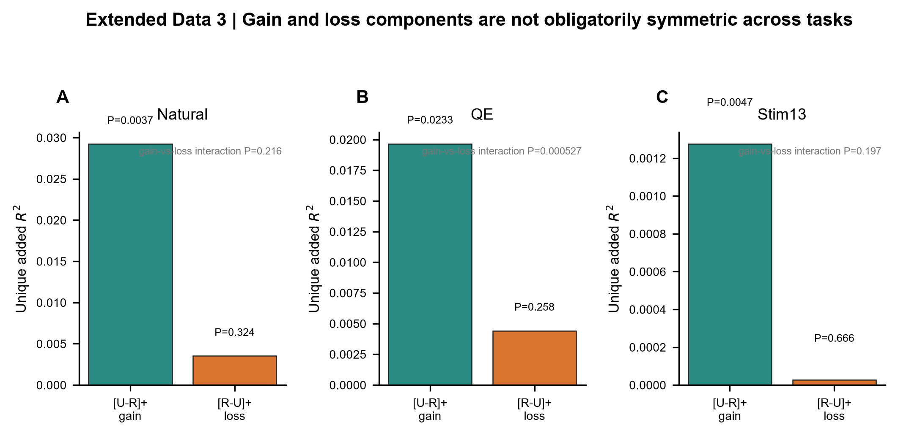
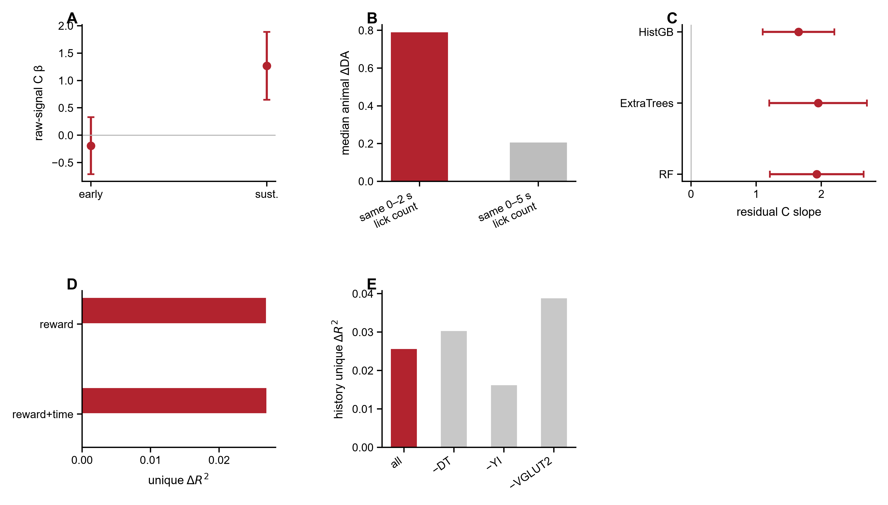
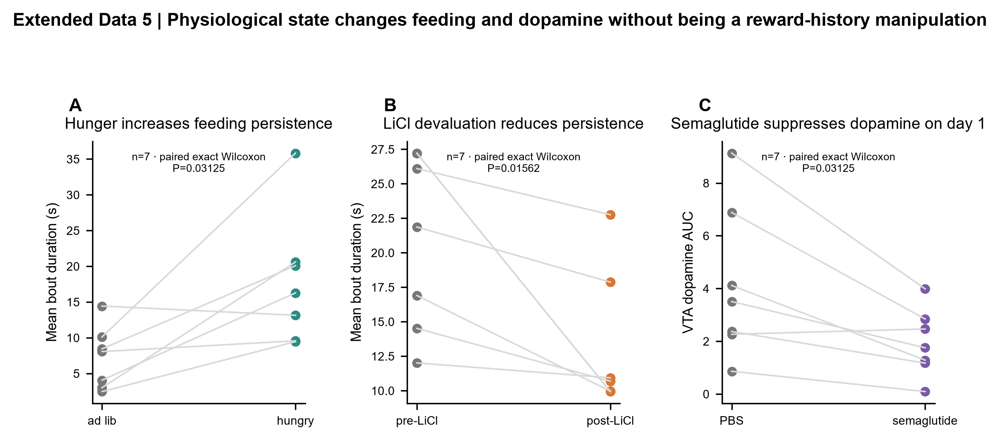
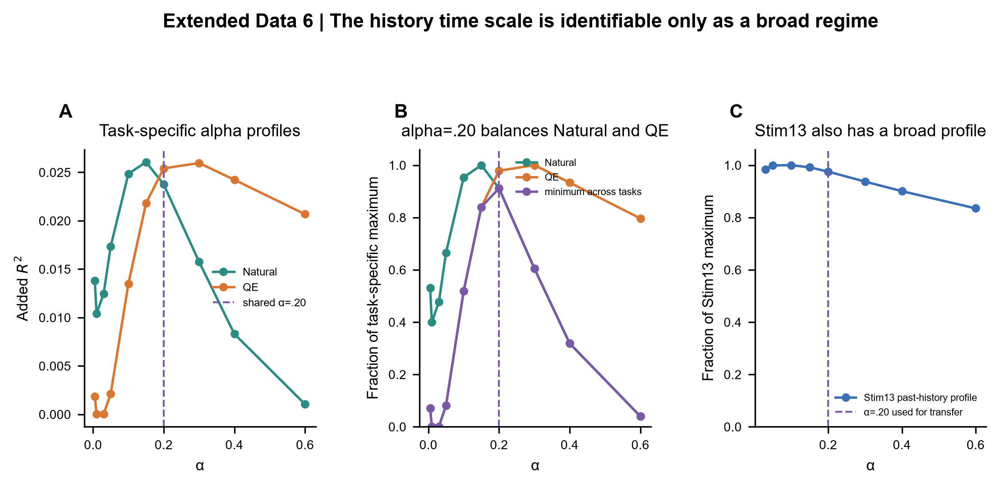
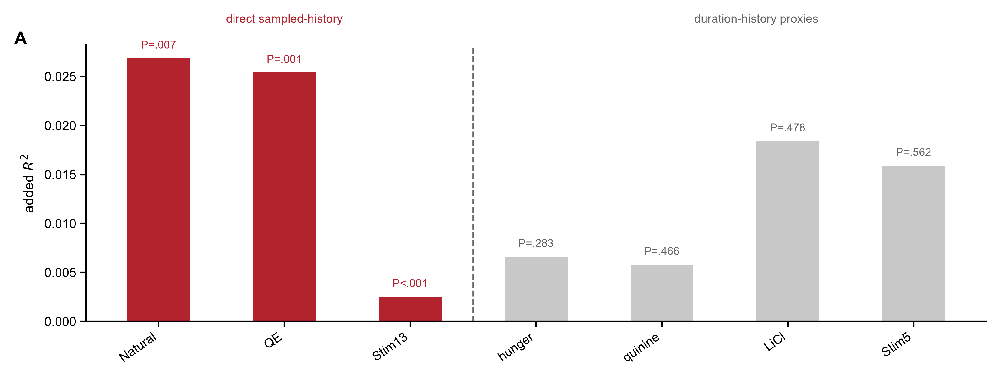
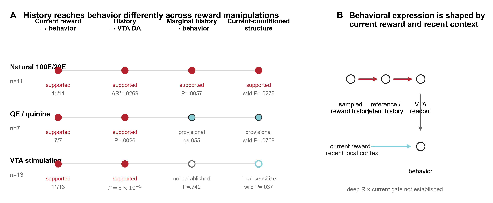
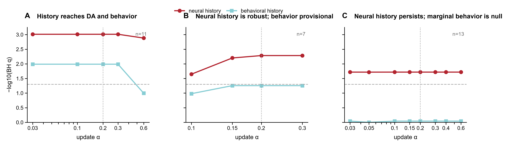
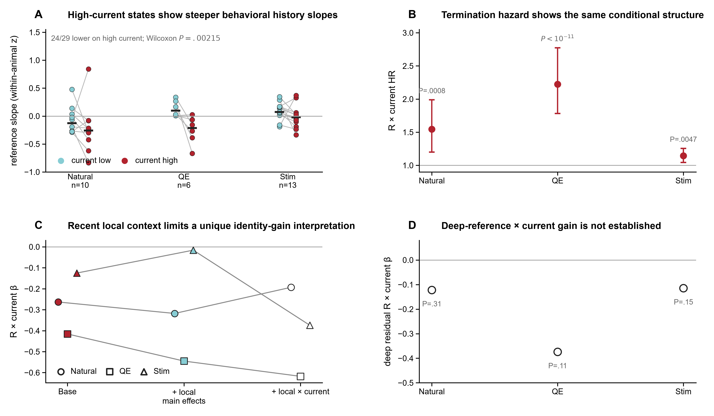
| 模型 | 生物学想法 | 能解释什么 | 还解释不了什么 |
|---|---|---|---|
| Belief state / HMM | 推断当前处于哪个latent reward context | switch附近的context inference与uncertainty | 仍不能完全吸收cumulative sampled-history信息 |
| Average reward rate | 近期环境的tonic reward level | 较慢reward-rate adaptation | 无法完全重建同样的path-dependent history |
| Pearce–Hall / adaptive gain | surprise / uncertainty改变learning gain | 解释switch后敏感度变化 | 不能单独替代stored history coordinate |
| Value-RNN | 非线性recurrent memory压缩reward序列 | 灵活表示history | 没有稳定证明比简单history coordinate更好 |
| Distributional value | 编码reward distribution width / quantiles | 解释population-level distribution coding | bulk photometry里spread information没有稳定超出central history state |
| FullHistory | 保留更完整的过去reward序列 | 检验一维C是否遗漏path information | 是强comparator，但不自动对应唯一生物机制 |
| 操作 | Cohort | 代表性结果 | 这里的意义 |
|---|---|---|---|
| Hunger / food restriction | 7-mouse QE/physiology family | bout duration增加10.62 s；6/7只增加（paired exact Wilcoxon，P=.03125）。 | 说明同一种20E可以被physiological state重新赋值。 |
| LiCl devaluation / illness | 同一7-mouse family | bout duration平均下降7.68 s；7/7只下降（paired exact Wilcoxon，P=.015625）。 | 代表另一种负向internal-state / value transformation。 |
| Semaglutide | 7只小鼠；其中6只与Stim13重叠 | Day-1 dopamine AUC相对PBS下降2.22 units；6/7只更低（paired exact Wilcoxon，P=.03125）。 | 把这套框架与GLP-1R-dependent satiety连接起来；具体文献为 Zhu Z, Gong R, Rodriguez V, Quach KT, Chen X, Sternson SM. Science. 2025;387:eadt0773. doi:10.1126/science.adt0773。 |
经典consummatory successive negative contrast（cSNC）研究的是：动物预期高价值solution，却突然得到较低价值solution之后，摄入行为如何改变。 既往lesion work提示gustatory thalamus、insular cortex和amygdala-related circuitry参与某些contrast behavior。 这些研究很适合作为“reference storage / comparison / affective response”候选环路的来源， 但现在的数据还不能把本项目的alternating-block VTA signal直接等同于传统cSNC。